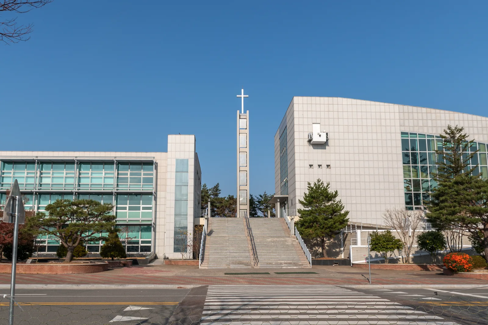

이곳은 어떤 곳인가요?
효암채플은 평봉필드 건너편, 언어교육원 옆에 위치하고 있으며, 왼쪽에는 채플 별관이 있습니다. 채플 본관은 주일 예배를 비롯한 여러 예배가 드려지는 곳이며, 채플 별관에는 교목실과 신앙 과목 교수님들의 연구실이 있습니다.
핫플레이스
효암채플&별관 안에서 꼭 가볼 만한 곳이에요.

건물 소개
효암채플은 평봉필드 건너편, 언어교육원 옆에 위치하고 있으며, 왼쪽에는 채플 별관이 있습니다. 채플 본관은 주일 예배를 비롯한 여러 예배가 드려지는 곳이며, 채플 별관에는 교목실과 신앙 과목 교수님들의 연구실이 있습니다.
효암채플&별관 안에서 꼭 가볼 만한 곳이에요.